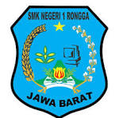

hallo!, saya

restimiaw
SAYA SEORANG PELAJAR DI SMKN 1 RONGGA
Tentang Saya
Saya adalah seorang pelajar yang tertarik dengan dunia teknologi, khususnya dalam pembuatan website. Melalui pelajaran web, saya belajar membuat dan mengembangkan tampilan website menggunakan HTML dan CSS. Saya juga belajar bagaimana menggunakan framework seperti Bootstrap dan Tailwind CSS untuk memudahkan dalam pembuatan tampilan website.
Portofolio
Portofolio
Berikut adalah beberapa karya dan project yang saya buat selama proses belajar dibidang pemograman.
• Membuat flexbox
• Desain halaman web
Pengalaman
Pengalaman saya di SMKN 1 Rongga adalah membuat beberapa project web sederhana menggunakan HTML & CSS.
Blog
Blog ini berisi cerita mengenai pengalaman belajar, proses belajar mengerjakan project, serta berbagai hal menarik.
Pendidikan
Riwayat Pendidikan
SDN SUKAMANAH, MTS BUNIJAYA, SMKN 1 RONGGA
